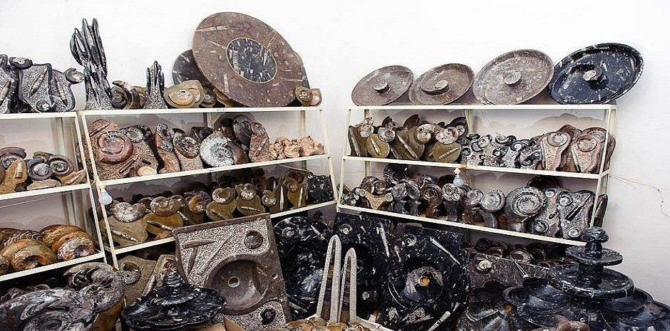

Morocco is famous for its colourful markets, handmade carpets, pottery, leather and traditional crafts. There is one more craft that many travellers discover for the first time in the country: Moroccan fossil decor.
Fossils are found inside stone across Morocco. The stone can be cut, polished and shaped into tables, sinks, plates, bowls, countertops, small ornaments and other objects. What makes this decor special is that the patterns inside the stone were not designed by a machine. Nature made them millions of years ago, so a Moroccan fossil piece is both a decoration and a small piece of natural history.
This guide explains what the decor is, where the fossils come from, how the stone is prepared, which pieces you can find and what to check if you want to buy one during your trip.
It is made from natural stone that contains visible fossils. Once the stone is cut and polished, the fossils become much easier to see, and craftsmen can turn it into furniture, household items or decorative objects.
No two pieces are exactly the same. Even two tables with the same shape and size have different fossil patterns inside. Common pieces include:
Some pieces are simple and natural, while others are carefully shaped and highly polished.
Many parts of Morocco hold ancient sedimentary rocks, which makes the country well known among fossil collectors. Long before modern Morocco existed, different areas were covered by ancient seas where marine animals lived. Over very long periods, some of these organisms were preserved inside layers of sediment, and those layers eventually became rock.
Today, fossil-bearing stone is especially linked to areas in the south-east of Morocco, where cutting and polishing fossils has also become an important local craft. For a visitor, this is a connection between geology and traditional craftsmanship: the fossil is ancient, but the finished table, bowl or ornament is made by a modern Moroccan artisan.
The exact process depends on the type and size of the piece, but the basic idea is simple.
Because every piece is naturally different. A factory can make hundreds or thousands of products with exactly the same pattern, but that cannot happen with fossil stone. The position, size, shape and number of fossils change from one piece of rock to another. One table may have several large, clear fossils, while another has smaller and more detailed patterns.
This means you are not only choosing a design. You are choosing a particular piece of natural stone, which gives fossil decor a very different character from ordinary home decoration.
You may see products sold as “Moroccan fossil marble”. This is a common commercial name for polished fossil stone, but not every stone sold under that name is marble in the geological sense. Many fossil-bearing decorative stones are limestone or other sedimentary rocks.
What matters most is the stone itself: the fossil patterns, the finish, the quality and the craftsmanship, more than the word “marble”. For a more expensive piece, it is reasonable to ask the seller exactly which stone was used.
Many fossils from Morocco are genuine, and the country has an important fossil trade. Still, products can vary. A decorative object can contain real fossils and also be cut, polished, repaired, assembled or shaped by people. That does not automatically make the fossil fake. A fossil table is clearly a manufactured piece of furniture, but the stone it is made from can be completely natural.
Individual collector fossils need closer inspection, because restoration or reconstruction can sometimes be present. If you mainly want home decor, look at the quality of the stone, the visible fossils, the polishing, the construction and the overall finish.
You do not need a large table to use fossil decor. A small piece works well on a shelf, a desk, a coffee table or a display cabinet. For a simple look, avoid putting too many objects around it, because the fossil patterns already provide most of the interest. A large table can be the main feature of a room, and smaller pieces can act as accents.
Good lighting helps too. When light falls on a polished fossil surface, many details become easier to see.
Fossil stone is fairly easy to look after, but it should be treated properly. Use a soft cloth for regular cleaning. For many pieces, mild soap and water are enough. Avoid strong chemicals unless you know they suit that exact stone and finish. For tables and other large pieces, it also helps to:
Care instructions depend on the stone and the finish, so always follow any specific advice that comes with the piece.
Yes. Travellers can find fossil products in different parts of Morocco, especially in areas connected with fossil cutting, handicrafts and tourism. The pieces range from small decorations to large furniture.
For large items, think about transport, packaging, weight and shipping before you make a final decision.
Our family has access to Moroccan fossil decor in Morocco, including pieces owned by the family. If you are interested, contact us to ask what is available at the moment and to talk about the options for buying.
This can be useful if you want to see the piece before you buy it, instead of ordering something without knowing exactly what you will receive.
Look closely at the whole piece, not only at the fossils. Check:
For expensive items, ask questions before you buy. A good seller can explain the material, the dimensions, the condition and the basic details of the piece.
Most visitors think of carpets, leather bags, ceramics, spices or argan oil when they think of souvenirs from Morocco. Fossil decor offers something different. A small piece reminds you not only of Moroccan craftsmanship but also of the country’s ancient geological history.
Large furniture is harder to take home, while smaller fossil pieces are easier to carry. For people who like geology, natural history, interior design or unusual handmade objects, it can be one of the most distinctive things to discover in Morocco.
Moroccan fossil decor is more than ordinary decoration. It joins ancient natural material with modern Moroccan craftsmanship, and a polished table, bowl, sink or ornament can reveal fossils that formed long before humans existed. That is what makes each piece different.
Whether you like geology, interior design or Moroccan crafts, or you simply want something unusual for your home, fossil decor shows a side of Morocco that many travellers never expect to find.
We reply with a route and a price, and you can change anything.